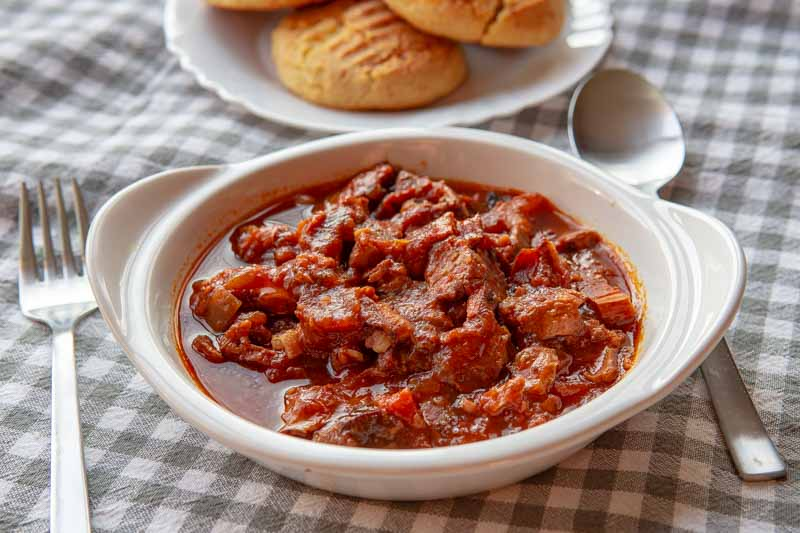

Mućkalica Recipe

From Leskovac with love
Mućkalica or Leskovac mućkalica is one of the most popular dishes in Serbian cuisine. It is a kind of stew, which is made
from leftover barbecue meat baked in a vegetable sauce.
The origin of this dish comes from the town of Leskovac in southern Serbia. In addition to mućkalica, Leskovac is known for
its barbecue, ajvar and the Leskovac grill.
Ingredients
- 400 g pork shoulder
- 100 g Smoked bacon lardons
- 2-5 pcs onion peeled roughly chopped
- 150 g tomatoes peeled deseeded and chopped
- 2.5-6 pcs red peppers
- 1.5-4 pcs garlic cloves finely chopped
- 0.5-2 teaspoons chilli peppers flakes
- 2-5 tablespoons Olive oil
- few stems fresh parsley chopped
- 0.5 tablesppon Salt
- a pinch Black pepper
Steps
- Place the peppers in a preheated oven and bake for 30-35 minutes at 200 degrees. When roasted, remove the
peppers, peel the skin and chop into larger pieces.
- Heat the oil and fry the onions briefly until golden. Add the roasted and chopped peppers, garlic and tomato
peel. Simmer all together for twenty minutes, occasionally adding water.
- During this time, grill the meat on the grill or grill pan. You can make skewers, so the meat can be removed
from the sticks after baking. If you have not made skewres cut the meat into larger cubes or strips.
- Dice bacon into larger cubes and bake separately.
- When the vegetables are tender, add the meat and bacon and cook together for 30 minutes.
- The mućkalica should not be stirred, but only occasionally shaken. Add spices to taste - it should be spicy.
Peppers, hot and sweet smoked, are added at the end. Before serving, sprinkle with parsley.